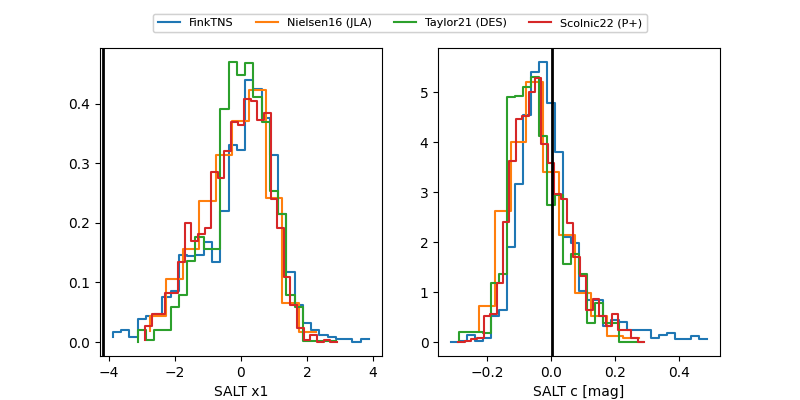

FINK: ZTF25abromxg
Lasair: ZTF25abromxg
ALeRCE: ZTF25abromxg
ZTF25abromxg (ztf,fink)
equatorial (ra, dec) = (126.6899,+11.35967)
galactic (l, b) = (213.2721,+26.25406)

last ztfr=19.52
3 ztfr detections